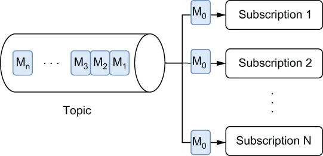

我的总结🤖：发布-订阅消息传递。发布-订阅消息模型中，生产者把消息发到主题，每条消息会投递给该主题上建立的每一个订阅（而非像队列那样只给一个消费者），因此它适合“多个消费者都要收到同一条消息”或“消息顺序对系统状态至关重要”的场景，比如股票价格服务。
In publish and subscribe messaging, producers publish messages to named channels, known as topics. Consumers can then subscribe to those topics to receive the incoming messages. A publish-subscribe (pub-sub) message channel receives incoming messages from multiple producers and stores them in the exact order that they arrive. However, it differs from message queuing on the consumption side because it supports multiple consumers receiving each message in a topic via a subscription mechanism, as shown below in figure 1.3.
在发布-订阅消息传递中，生产者把消息发布到被称为主题的命名通道。消费者随后可以订阅这些主题，以接收传入的消息。发布-订阅（pub-sub）消息通道接收来自多个生产者的传入消息，并严格按照它们到达的顺序进行存储。不过，它在消费端与消息队列不同：它通过订阅机制支持多个消费者接收主题中的每条消息，如下图 1.3 所示。

\Figure 1.3 With pub-sub message consumption, each message is delivered to each and every subscription that has been established on the topic. In this case, message M0 was delivered to subscriptions through N inclusive.
图 1.3 采用 pub-sub 消息消费时，每条消息都会被投递到该主题上建立的每一个订阅。在本例中，消息 M0 被投递给了从第 0 个到第 N 个的所有订阅。
Publish-subscribe messaging systems are ideally suited for use cases that require multiple consumers to receive each message or those in which the order in which the messages are received and processed is crucial for maintaining a correct system state. Consider the case of a stock price service that can be used by a large number of systems. Not only is it important that these services receive all the messages, but it is also equally important that the price changes arrive in the correct order.
发布-订阅消息系统非常适合这样一类用例：需要多个消费者都收到每条消息，或者消息被接收和处理的顺序对维持正确的系统状态至关重要。以一个可被大量系统使用的股票价格服务为例。让这些服务收到全部消息固然重要，但同样重要的是，价格变动必须按正确的顺序到达。